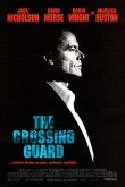

|
|
Acerto Final |
|
|
 |
|
Após esperar por 6 anos, um homem decide se vingar pela morte de sua filha. Dirigido por Sean Penn (Unidos pelo Sangue) e com Jack Nicholson, Anjelica Huston, Robin Wright e David Morse no elenco.
|
|
|
Ficha Técnica | Voltar
Título Original: The Crossing Guard
Gênero: Drama
Tempo de Duração: 111 minutos
Ano de Lançamento (EUA): 1995
Estúdio: Miramax Films
Distribuição: Miramax Films
Direção: Sean Penn
Roteiro: Sean Penn
Produção: Sean Penn e David Shamroy Hamburger
Música: Jack Nitzsche, Bruce Springsteen e Joseph Vitarelli
Fotografia: Vilmos Zsigmond
Desenho de Produção: Michael D. Haller
Figurino: Jill M. Ohanneson
Edição: Jay Lash Cassidy
|
Elenco | Voltar
Jack Nicholson (Freddy Gale)
Anjelica Huston (Mary)
David Morse (John Booth)
Robin Wright (Jojo)
Piper Laurie (Helen Booth)
Richard Bradford (Stuart Booth)
Priscilla Barnes (Verna)
David Baerwald (Peter)
Robbie Robertson (Roger)
John Savage (Bobby)
Kari Wuhrer (Mia)
Jennifer Leigh Warren (Jennifer)
Joe Viterelli (Joe)
|
Sinopse | Voltar
Freddy Gale (Jack Nicholson) é o dono de uma pequena joalheria que esperou seis anos para matar John Booth (David Morse), um homem que atropelou e matou sua filha quando estava bêbado. Booth deixou recentemente a prisão, onde cumpriu a pena pela morte da jovem, sendo que agora chegou o momento que Freddy tanto esperou para o ajuste de contas.
|
Pôsters | Voltar
- Clique nos cartazes para vê-los ampliados em uma nova janela.
|
|
|
|
|
|
|
|
|
|
|
|
|
|
|